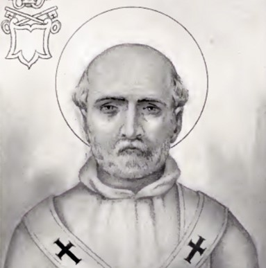

St. Evaristus
Date of birth unknown; died about 107. In the Liberian Catalogue his name is given as Aristus. In papal catalogues of the second century used by Irenaeus and Hippolytus, he appears as the fourth successor of St. Peter, immediately after St Clement. The same lists allow him eight years of reign, covering the end of the first and the beginning of the second century (from about 98 or 99 to about 106 or 107). The earliest historical sources offer no authentic data about him. In his "Ecclesiastical History" Eusebius says merely that he succeeded Clement in the episcopate of the Roman Church which fact was already known from St. Irenæus. This order of succession is undoubtedly correct. The "Liber Pontificalis" says that Evaristus came of a Hellenic family, and was the son of a Bethlehem Jew. It also attributes to him the allotment of definite churches as tituli to the Roman presbyters, and the division of the city into seven diaconias or deaconries; in this statement, however, the "Liber Pontificalis" arbitrarily refers to the time of Evaristus a later institution of the Roman Church. More trustworthy is the assertion of the "Liber Pontificalis" that he was laid to rest in Vaticano, near the tomb of St. Peter. The martyrdom of Evaristus, though traditional, is not historically proven. His feast occurs 26 Oct. The two decretals ascribed to him by Pseudo-Isidore are forged.
Kirsch, J.P. (1909). Pope St. Evaristus. In The Catholic Encyclopedia. New York: Robert Appleton Company. Retrieved June 9, 2021 from New Advent: http://www.newadvent.org/cathen/05646a.htm